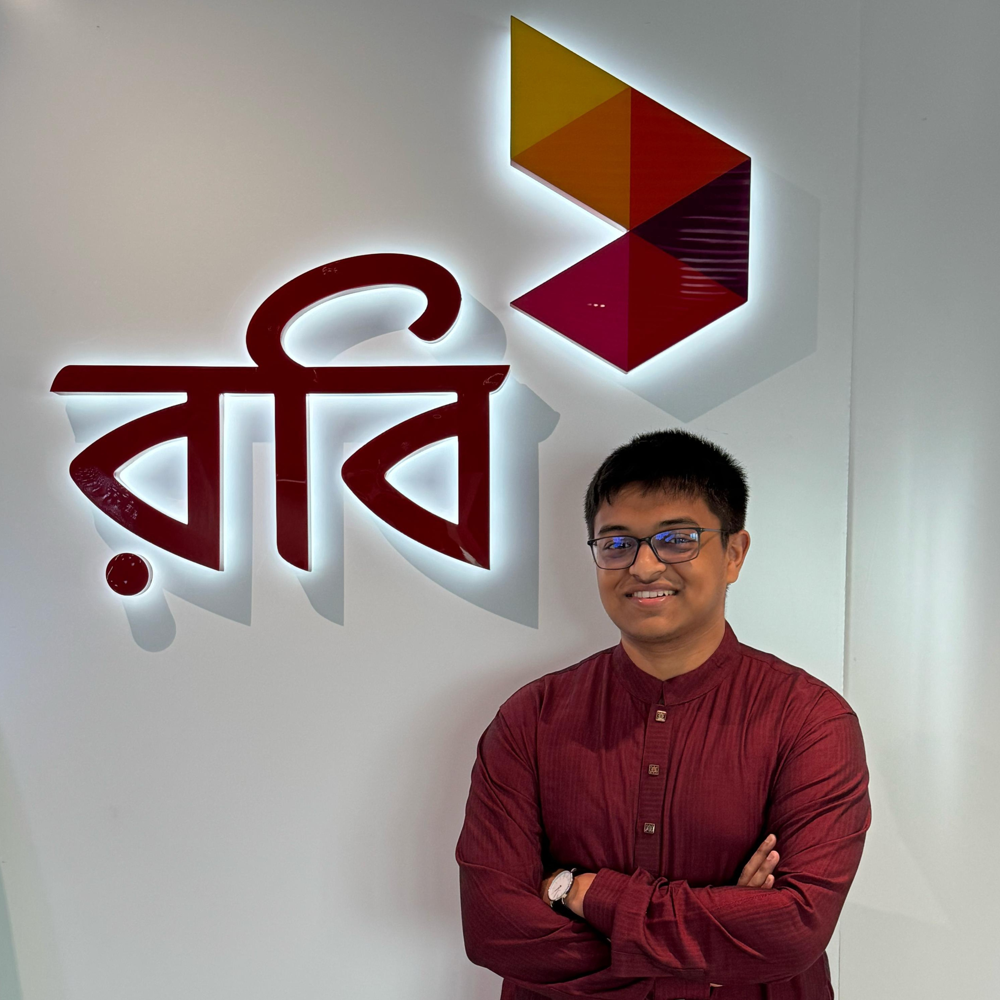
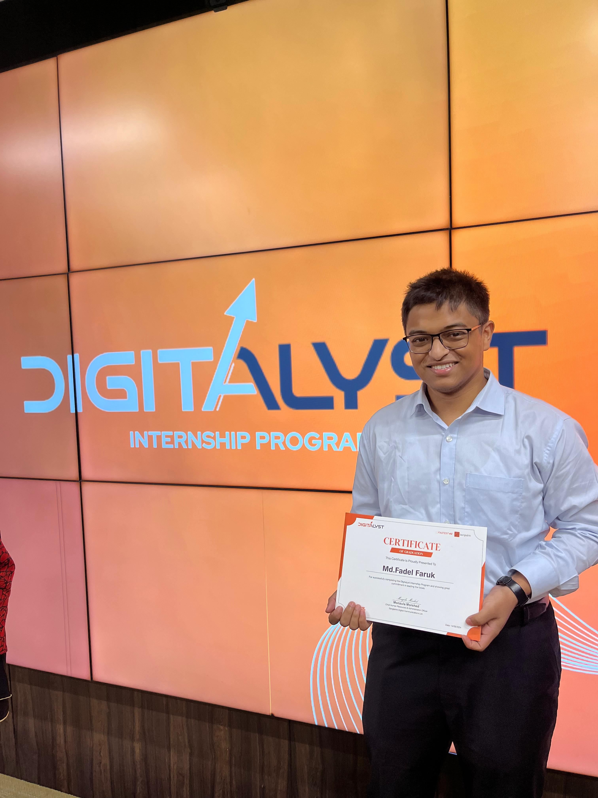

Work Experience
Professional journey, technical regulatory advocacy, and infrastructure operations
February 2025 – Present • Dhaka, Bangladesh
Senior Associate
Technical regulations & Communications | Robi Axiata PLC

Responsibilities:
- • Responsible for telecom infrastructure and spectrum management. Analyze 3GPP standards, GSMA publications, and ITU recommendations to assess emerging technologies, support regulatory policy development and guide infrastructure planning. Assess the technical feasibility and regulatory implications of new solutions and proposals submitted by technology vendors. Manage network QoS, technical compliance with licensing requirements and overall regulatory obligations. Oversee the timely resolution of network-related complaints.
- • Maintain regulatory engagement with Government stakeholders like Bangladesh Telecommunication Regulatory Commission (BTRC) and Ministry of Posts, Telecommunications and Information Technology on licensing, technical policy and compliance, representing Robi’s strategic interests in high-stakes negotiations and government-led telecom initiatives.
- • Manage communication and collaborate with external stakeholders, such as other mobile operators, on various projects, including network deployment at government KPI locations such as Hazrat Shahjalal International Airport, and in challenging areas such as the hill tract regions.
- • Engage ecosystem partners including TowerCo, NTTN, ICX and IGW operators on regulatory compliance frameworks, commercial agreements and shared infrastructure strategies.
- • Oversee regulatory scoping and approval processes for site planning, network optimization and infrastructure deployment, in line with BTRC licensing requirements. Manage licensing obligations and compliance by checking with internal stakeholders that requirements are met and report to regulatory bodies and to Axiata Group.
- • Drive policy advocacy on spectrum pricing, QoS standards and network management through global benchmarking and comparative analysis, shaping regulatory positions aligned with licensing frameworks and Robi’s business strategy.
- • Develop scenario-based forecasting and analytical assessments on spectrum acquisition, technology OPEX optimization and emerging regulatory developments to support executive decision-making.
- • Manage end-to-end spectrum charge calculations, regulatory payment submissions and financial dispute resolution with BTRC, coordinating across technical and finance stakeholders.
- • Manage network-related complaints from authorities, coordinating with technical and legal teams to resolve them on time.
May 2024 – Aug 2024 • Dhaka, Bangladesh
Digitalyst Intern
Technology Financial Management | Banglalink Digital Communications Ltd.

Responsibilities:
- • Assisted the core operational team of Banglalink’s major tower handover project to Summit Towers Ltd.
- • Coordinated with internal stakeholders and the legal team and also maintained procedures with Summit’s team.
- • Supported documentation, data tracking, vendor management and reporting processes to streamline project workflows.
- • Gained hands-on exposure to corporate operations, cross-functional collaboration, and project lifecycle management in a dynamic MNC environment.